论文：Causalvis: Visualizations for Causal Inference
作者：Grace Guo, Ehud Karavani, Alex Endert, Bum Chul Kwon
发表：CHI 2023
因果推断是一种利用观测数据量化因果效应的统计范式。它是一个复杂的过程，需要多个步骤、迭代以及与领域专家的合作。分析师们经常依靠可视化来评估每个步骤的准确性。然而，现有的可视化工具包并不是为了支持分析师熟悉的计算环境中的整个因果推断过程而设计的。在本文中，我们使用 Causalvis 解决了这个问题，Causalvis 是一个用于因果推理的 Python 可视化包。通过与因果推断专家的紧密合作，我们采用了一个迭代设计过程，开发了四个交互式可视化模块，以支持因果推断分析任务。然后将这些模块展示给专家进行反馈和评估。我们发现 Causalvis 有效地支持了迭代式因果推断过程。我们讨论了我们的发现对设计因果推断可视化的指导意义，特别是对沟通和协作任务的影响。
1 Introduction
Background
因果推断（Causal Inference）是用来衡量因果效应的统计范式，常用分析手段包括
- 随机对照实验（Randomized controlled trials, RCTs）：黄金标准，但有时受限于成本和道德
- 观测研究（Observational study）：从观测数据中推断因果，被广泛应用于医疗、经济和社会科学
- 从观测数据中选择对照组和实验组来模拟随机对照实验，以估计干预效应（Treatment effect）
Motivation
因果推断的复杂性
为了保证估计的可靠和无偏，需要采取额外的步骤，这往往是一个复杂的过程，需要多个步骤，反复迭代，以及与领域专家合作。
举个例子，为了分析吸烟与肺癌的关系，研究者从数据中选择吸烟人群和非吸烟人群，比较肺癌的比例。然而，直接的比较是无效的，需要做出一些假设：这些两组患者需要相似，例如不能吸烟组只有男性，而非吸烟组男女都有，或者吸烟者的年龄比非吸烟者大。如果不调整这些混杂变量（confounding variables），估计的效应就会不准确。
Existing works
- 不是为因果推断而设计的
- Matplotlib, seaborn
- 支持有限的分析任务
- CausalNex
- 作者之前的工作：Vaine: Visualization and ai for natural experiments
- arXiv 上的工作：An Evaluation Toolkit to Guide Model Selection and Cohort Definition in Causal Inference
- 仅提供工作流的部分支持，且无法相互配合
- 不支持快速迭代，以及无法集成进已有计算环境和统计包
目前还没有可视化工具包可以用来支持用户在整个因果推断工作流程中的各种分析任务。
Method
设计研究
- 形成性访谈：了解因果推断工作流以及分析任务
- 迭代式设计：开发可视化工具库 Causalvis，包含四个模块支持数据分析人员理解和交流因果结构，识别和调整混杂变量，优化群组，探索异构性干预效应，以及追踪分析历史。
Evaluation
定性的用户实验
Contribution
- 在因果推断过程中对用户任务和设计要求的描述；
- 一个由四个可视化模块组成的 Python 库 Causalvis，在因果推断过程中为专家提供支持；
- 专家对每个模块的设计、功能和改进的反馈；
- 在已有计算环境中开发和评估工具包中得到的经验教训。
https://github.com/causalvis/causalvis
2 Related work
2.1 Causal Inference
- Causal discovery: reverse causality
- 发现变量之间的因果关系
- Causal inference: forward causality
- 量化因果关系的强度
本文支持潜在结果框架（potential outcomes framework）
2.2 Causal Visualization
因果分析的前提是 DAG，可以通过领域知识构建，或者通过自动因果发现算法挖掘
很多工作都基于 SCM 框架，并不与流行的 PO 框架兼容
在 PO 中，DAG 是用来识别混杂关系的，而这在之前的基于 SCM 的可视化工具中不被支持。
作者调研了支持 PO 的可视化包，最终只发现了三个
- VAINE: Visualization and AI for Natural Experiments
- 只支持有限的任务，例如还无法识别变量类型
- causallib: An Evaluation Toolkit to Guide Model Selection and Cohort Definition in Causal Inference
- 静态可视化
- Cobalt: Covariate Balance Tables and Plots: A Guide to the cobalt Package
- 静态可视化
为了填补空缺，作者实施了设计研究来理解用户的因果推断工作流，并构建和评估交互式可视化系统来支持用户的分析。
2.3 Visualizations in Computational Environments
贴合用户工作场景
3 Design Study
3.1 Participants
滚雪球法（snowballing method）：先随机选择一些被访者并对其实施访问，再请他们提供另外一些属于所研究目标总体的调查对象，根据所形成的线索选择此后的调查对象。
3.2 Study Procedure
写的很详细
3.3 The Causal Inference Workflow
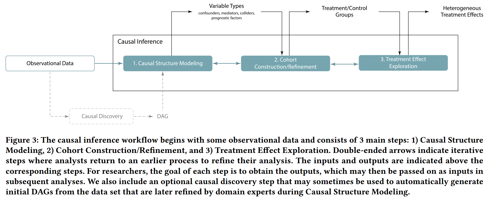
- Causal Structure Modeling
- 识别出需要调整的变量，例如 confounder
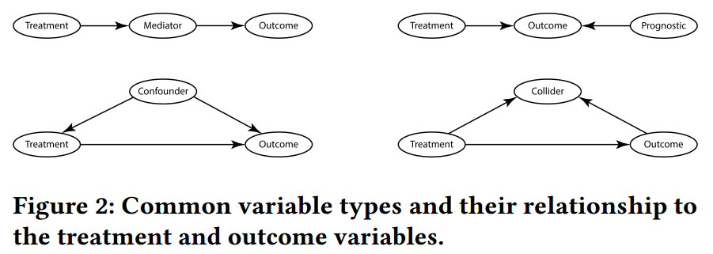
- 文献：Hernán, Miguel A., and James M. Robins. “Causal inference.” (2010): 2.
- 不是所有的变量都需要调整，例如调整 colliders 和 meadiators 可能会使结果产生偏差
- 首先根据 domain knowledge 或 causal discovery 方法来创建一个 DAG 的草图，然后再迭代式验证或优化图
- Cohort Construction / Refinement
- cohort 需要满足 positivity 假设，即 treatment group 和 control group 的分布要有重叠
- 解决方法：
- Matching: 简单但可能丢弃掉很多样本
- inverse propensity weighting: positivity 使用全部数据，假设可能不满足
- 检查 positivity violation 经常是首要的事情，这可以通过检查 propensity score distribution 来实现，迭代去除 imbalanced samples
- Treatment Effect Exploration
- 先计算 individual treatment effects，再聚合得到感兴趣的 group 上的效应，如何不同 group 的效应不一样，那么就说存在 heterogeneous treatment effects
3.4 User Analytic Tasks
专家希望在 notebook 中工作
- Collaboratively creating and communicating causal structure. [Causal Structure Modeling]
- 允许缺少因果技术知识的用户使用
- Maintaining the independence of causal structure from specific data sets. [Causal Structure Modeling]
- 数据科学家和领域专家经常需要在数据集准备好前就因果结构进行沟通
- Identifying different types of variables. [Causal Structure Modeling]
- 识别并追踪不同类型的变量，如 confounders, mediators, colliders 和 prognostic factors
- Checking covariate balance and positivity violations. [Cohort Construction/Refnement]
- 检查 covariate balance 和 positivity assumption，允许用户排除某些样本以满足 positivity assumption
- Estimating treatment effects conditioned on a variable. [Treatment Effect Exploration]
- 分析 treatment effect 在不同 subgroup 上是如何变化的
- Supporting a flexible and iterative workflow
- 并不是固定和单向的
- Tracking analytic provenance
- 因为经常没有 ground truth，用户经常在多种假设中迭代，因此希望能追踪和比较不同分析决策的结果
- Integrating with existing causal analysis packages
- networkx, CausalNex, causallib
4 CAUSALVIS
每一个模块都介绍了
- functions
- arguments
- variables
作者还讨论了已有的可视化包，并描述了 Causalvis 如何革新和扩展这些解决方案。
4.1 Usage Scenario
通过一个用例来描述 Causalvis 在真实因果推断任务中的使用流程
A systematic review on the practice of evaluating visualization
数据集：UCI Student Performance data set
- 该数据集是 Causalnex 的示例数据，也被 ML 社区用于预测学生的学术表现
- 领域很直观，先验知识可以用来作为 baseline
干预变量：_absences_
- 作者根据中位数将其二元化，1：frequent absences, 0: few / no absences
结果变量：G1
- 第一场考试的成绩
使用场景遵循三步流程，中间可能会使用其他包，例如 causallib，以便计算统计信息。
4.2 DAG
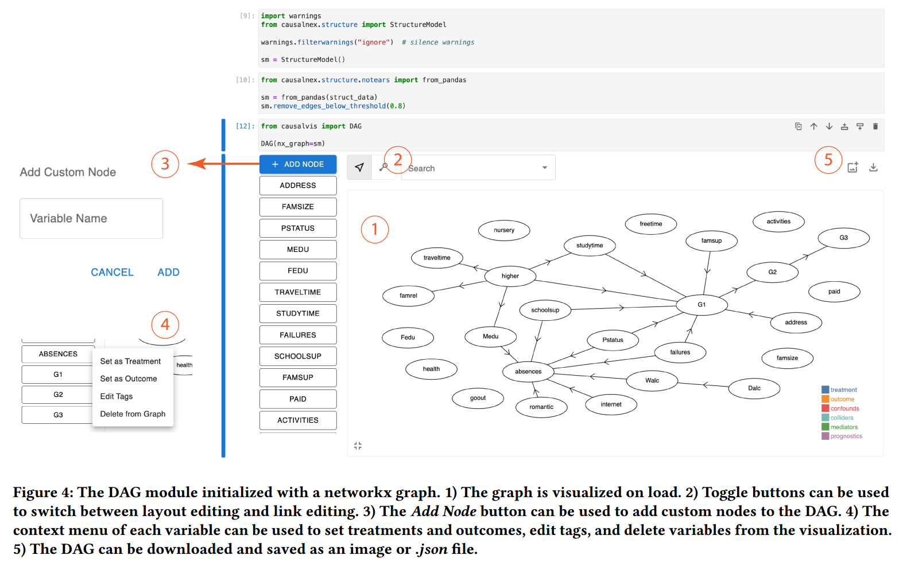
已有流程：
- 使用 Causalnex 等包手动编程式的创建因果结构，且结果无法直接修改，导致创建和优化 DAG 的过程十分耗时
- DAGitty 支持交互式编辑 DAG，但要求用户了解因果结构术语，如 confounders, conditional independence
本文流程 （T1）
- 交互式和合作的因果结构建模
- 实现自动的变量类型识别
- 支持图片下载功能，以便分享
Initializing the DAG Module
- 最简单的方法是使用
DAG()（T2），还可以传入attributes, graph, data, nx_graph等参数 （T8）
Creating and Editing DAGs
- 创建和编辑点边
- 用户可以快速迭代不同的假设（T6），领域专家不需要了解专门技能（T1）
Identifying Variable Types
- 选择 treatment 和 outcome 后，其他的变量会自动高亮为 confounders, colliders, mediators 或 prognostics，这有助于用户识别必须要调整的变量（T3）
Saving and Sharing DAGs
- 下载为 png 或 json （T1）
Accessing DAGs and Variable Types in Python
- 直接通过代码
.DAG读取因果结构（T8），通过.confounds等读取变量类型（T3）
4.2.1 Usage Scenario
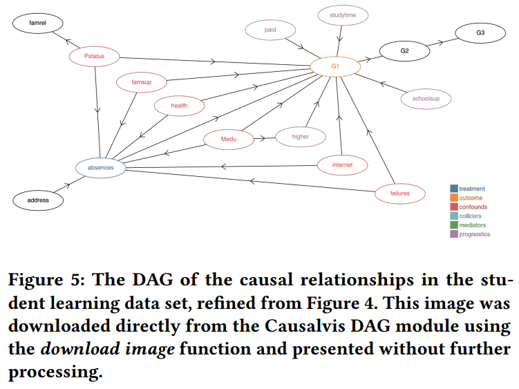
先使用 Causalnex 发现一个结构，再基于领域知识删除一些虚假的点边
从图 5 中发现，6 个 confounding 变量和 4 个 prognostic 变量需要调整。
4.3 Cohort Evaluator
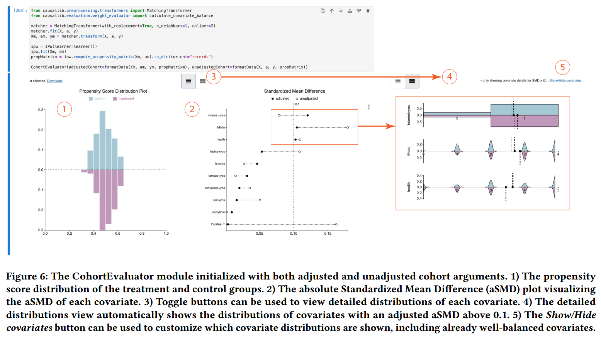
帮助用户验证选择的 cohort 是否满足 positivity 假设
该视图使用了两个在因果中常用的图表，在 causallib 和 Cobalt 库中也有使用，但要么只支持特定方法（如 IPW）或只有静态可视化，这使得 cohort 迭代优化十分耗时
- propensity score plot
- absolute Standardized Mean Difference plot (aSMD plot, 也叫做 Love plot)
因此，CohortEvaluator 解决了上述问题
Evaluating Propensity Balance
- 查看倾向值得分分布的重叠（T4）
Identifying Positivity-Violating Samples
- 刷选违反 positivity 的样本（T4）
- 获取
.selection,.iselection
Evaluating Covariate Balance
- 在 well-balanced cohort 中，调整后的实验组和控制组的标准化均值差（standardized mean difference）应该接近于 0，通常 0.1 作为阈值以识别不平衡的 covariates （T4）
- 用户可以通过 sort 识别需要进一步分析的 covariate
Supporting Different Causal Inference Methods
- matching 方法会使用 unadjusted cohort 和 adjusted cohort
- IPW 方法则只使用 unadjusted cohort
- CohortEvaluator 可以通过不同参数初始化以使用不同的方法 （T6）
Usage Scenario
得到了包含 328 位学生的 cohort，192 位在 treatment group，189 位在 control group
将 original data set 传入 CohortEvaluator，并使用 unadjustedCohort 参数，将 matched cohort 提供给 adjustedCohort 参数
调整 matching 的参数，得到更 well-balanced 的 cohort
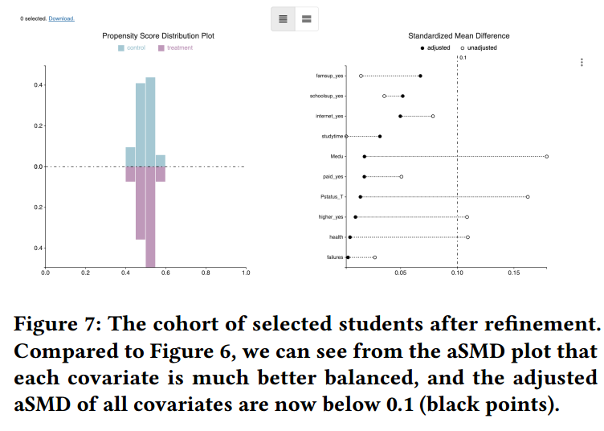
4.4 Treatment Effect Explorer
ATE 是为整个 cohort 计算的，有时比较不同 subgroup 的平均效应更有用。识别异构性可以得出更精确的结论（T5）。
现在并没有可视化包用于 treatment effect exploration。
因此 Treatment Effect Explorer module 被开发用于可视化以不同变量为条件下的 individual treatment effects，如图 8 所示。
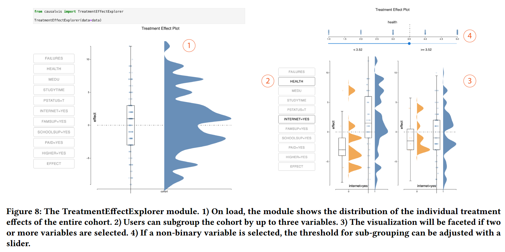
该模块只适用于特定因果推断方法，如 matching，因为可以计算 ITE，而不适用于 IPW，因为其只能得到整个 cohort 上的 ATE。
Creating and Exploring Subgroups
- 使用了 raincloud plot 和 beeswarm plot
- 可以使用列表中的变量来 facet （分面），最多选三个
Identifying Heterogeneous Treatment Effects
- 识别 treatment effect 显著不同的 sub-population（T5）
Usage Scenario
给 Treatment Effect Explorer 传入的是 individual treatment effect，以探索 subgroup 和识别 heterogeneous treatment effect
4.5 Version History
追踪 DAG 和 cohort 是一个重要的任务，可以帮助用户回想分析历史（T7）。
现在还没有 provenance tracking 工具，因此本文开发了 Version History module，如图 9 所示。
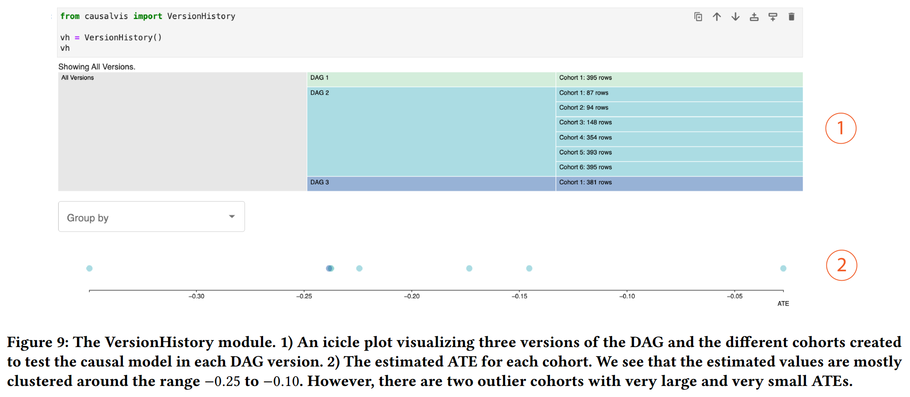
Tracking Provenance with the Version History module
- 使用
VersionHistory()创建空白 icicle plot - 使用
.addVersion((DAG, cohort, ATE))追踪分析历史（T7），可以与已有的因果推断工作流结合（T6） - 每次添加版本后，可视化会自动更新
Saving and Sharing Versions
- 使用
.saveVersions()下载为.json文件，以便于复现和分享（T1）
5 Expert Evaluation
定性实验
5.1 Participants
11 位专家，来自工业界和学术界
5.2 Tasks
4 个 notebooks，让专家完成特定任务，如初始化 DAG，完成后收集反馈
5.3 Results
5.3.1 DAG
- DAG 模块支持沟通和协作（T1）
- 自动识别 DAG 中不同的变量类型很有帮助（T3）
- 用户喜欢 DAG 模块快速和交互式的迭代的功能
- 用户想在 DAG 模块中添加更多的注释功能
- 边上添加相关系数
- 标注有疑问和需要审查的边或结构
5.3.2 Cohort Evaluator
- 提供了关于协变量平衡和 positivity 假设违反情况下的数据分布的细节信息（T4）
- 用户希望从倾向值得分图中选择实例后得到反馈，例如比较选出的样本与整个 cohort，分析它们的协变量分布究竟有什么不同。另外用户还希望提供可视化和交互的说明和示例，以获得更多 guidance。
“Guidance is a computer-assisted process that aims to actively resolve a knowledge gap encountered by users during an interactive visual analytics session
—— Ceneda et al., 2017
5.3.3 Treatment Effect Explorer
- 交互式可视化减少了用户反复探索和比较数据子集所需的时间（T5）
- 支持关于因果推断的沟通和故事叙事
- 需要提供更多的定制化和引导
5.3.4 Version History
- 该模块有助于追踪历史但需要包含更多的功能（T7），例如使用的模型的参数
- 用户希望能够回顾和比较 DAG
6 Discussion
- 通过交互式可视化支持快速迭代验证假设
- 向领域专家和合作者解释和交流因果推断
- 既有分析又有交流
- Striking a Balance: Reader Takeaways and Preferences when Integrating Text and Charts
- Once upon a time in visualization: Understanding the use of textual narratives for causality
- 通过敏感性分析评价效应估计的鲁棒性
- dowhy 因果库包含鲁棒性分析
- Boba: Authoring and visualizing multiverse analyses
- Decision-making under uncertainty in research synthesis: Designing for the garden of forking paths
7 Lessons Learned from Design Study
- 设计可视化库辅助已有工作流和任务，而不是打断或者替换它们（T6）
- 集成到计算环境中（T8）
- Interfaces for staying in the flow
- Fluid interaction for information visualization
- SuperNOVA: Design Strategies and Opportunities for Interactive Visualization in Computational Notebooks
- 与不同领域和角色的专家合作
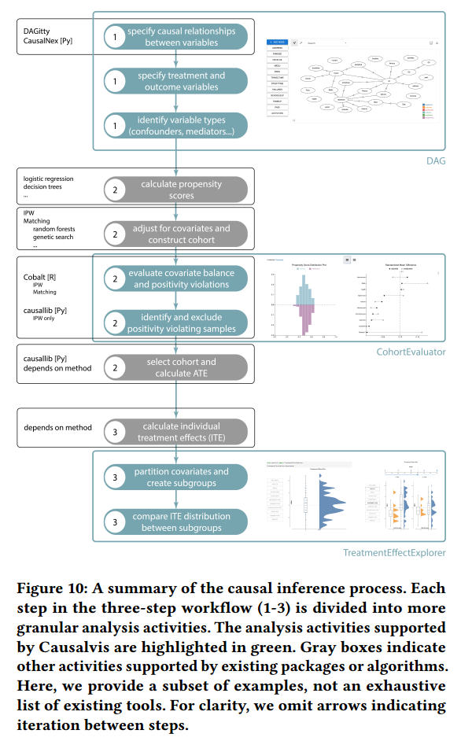
8 Conclusion
本文介绍了对一个支持因果推理的 Python 可视化包 Causalvis 的设计研究。
Review
Critical thinking
- 核心问题：如何设计支持因果推断的可视化工具库
- 老问题：已有一些尝试，但都做的不够好
- 是一个重要的问题，解决实际需求
- 核心贡献：设计研究
- 方法：图可视化、倾向值匹配
- 老方法
- 优点：
- 在实际场景中找问题（真需求）
- 开源易用（python 包）
- 缺点：
- 写作冗长（双栏 17 页）
- 偏工程（老方法组合）
Creative thinking
- Causality for data augmentation
- 依赖捷径
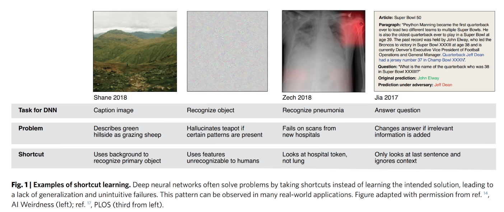
- 反事实数据增强
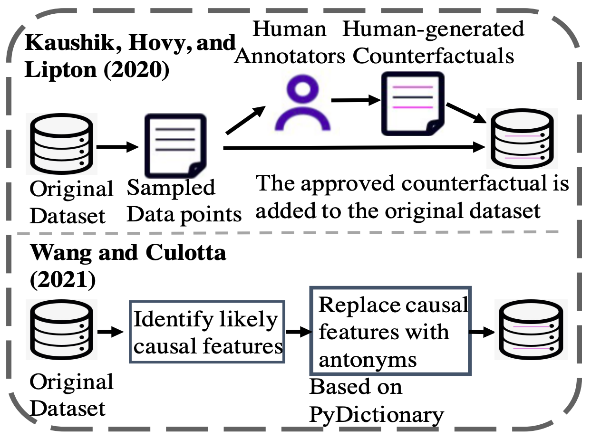
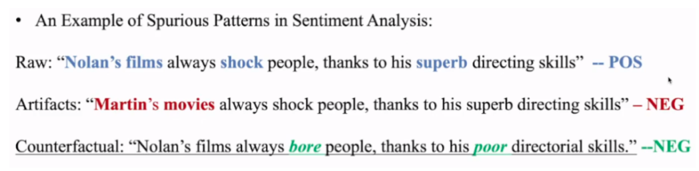
- Causal / Domain knowledge for large language models
- Explicit knowledge (expertise and design guidelines in visualization) + implicit knowledge base (large model)
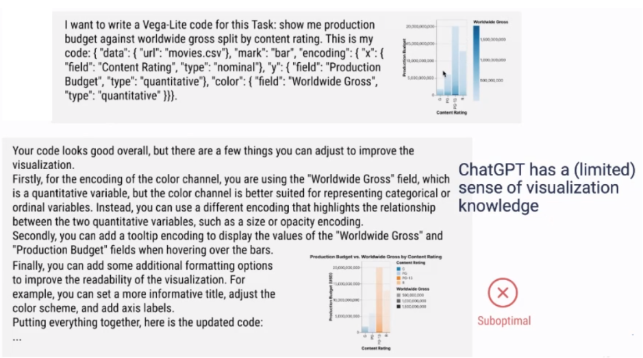
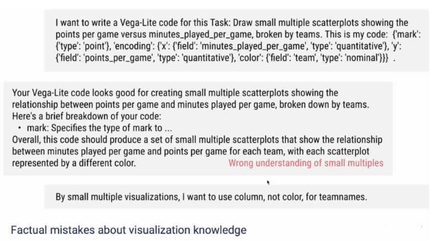
- Causal disentanglement learning
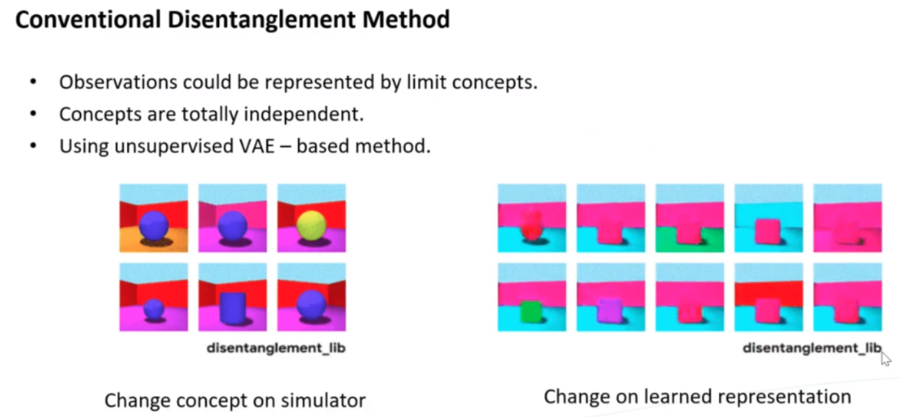
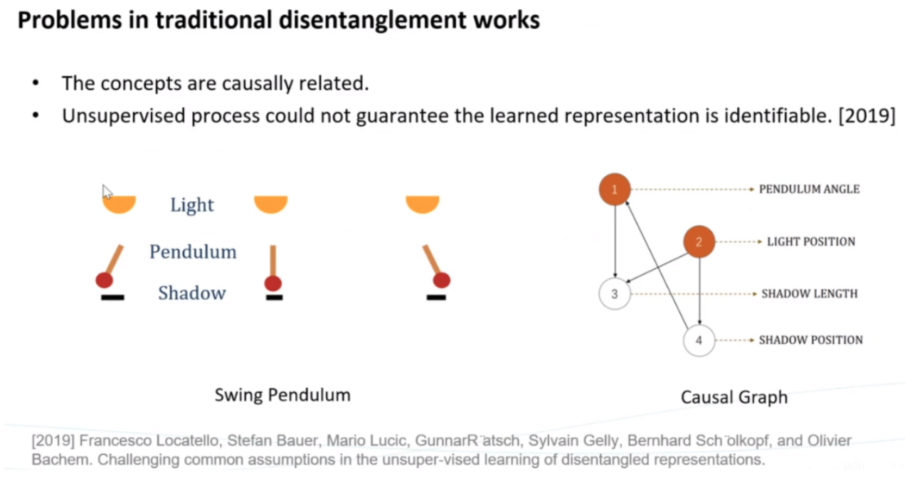
✉️ zjuvis@cad.zju.edu.cn